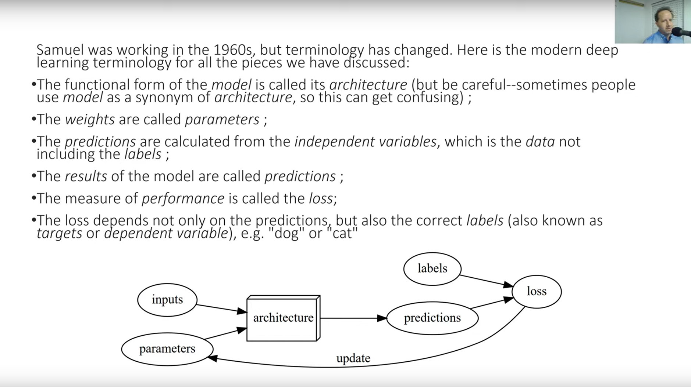

Question 7/9 fast.ai v4 lecture 1
ML Jargon - what do we call: - the functional form of a model
- the weights
- the results
- the measure of performance
- the dependent variable
Answer
- the functional form of a model -> architecture
- the weights -> parameters
- the results -> predictions
- the measure of performance -> loss
- the dependent variable -> targets

supplementary material
Why targets? Aren't 'labels' an equally if not more common name for the dependent variable?
While the term 'label' is popular and applicable in the context of classification (is the animal in the image a cat or a dog?), 'labels' constitute a specific type of targets. As we continue to learn about machine learning, we will start to encounter models that can predict many other things, for instance numeric values (what is the age of the person in this x-ray?) or perform some other task, such as predicting the id of a word most likely to occur next in a sequence. In all these context we can safely refer to our dependent variable as targets!
{kind=link}